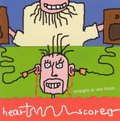

| Artist: | Heartscore |
| Title: | Straight To The Brain |
| Label: | self produced |
| Length(s): | 57 minutes |
| Year(s) of release: | 2004 |
| Month of review: | [09/2005] |
| 1) | God Lay Dead | 3.05 |
| 2) | Long John Brown And Little Mary Bell | 5.22 |
| 3) | Anyone | 4.25 |
| 4) | Love Is Like Whiskey | 3.28 |
| 5) | A Dream Within A Dream | 3.47 |
| 6) | The Schoolboy | 7.51 |
| 7) | The Tides Rises, The Tide Falls | 3.40 |
| 8) | Ballad Of The Gypsy | 4.31 |
| 9) | The Arrow And The Song | 4.41 |
| 10) | Her Eyes | 3.31 |
| 11) | Good-Bye | 5.10 |
| 12) | The Day Is Done | 7.56 |
The title A Dream Within A Dream will sound familiar to many, and indeed the lyrics are the poem by Edgar Allan Poe. Again, complex/fickle guitar dominated rock harbouring a large amount of restlessness. It certainly does not make the song easy to follow, but my guess is that this is partly the idea. This is one of the more likable songs so far. Again there is a certain punkishness to the affair (both the low-budgetness and the energy), thus reminding me in places of a wayward band such as Victims Family. The chorus is very melodic this time around.
The Schoolboy is a weird song, almost a pastiche of some kind. The guitars are punkish, the vocal lines have a humoristic tinge, and the song has some nice trumpet, piano and violin work for added melodicity. Interesting, and very prog sounding too. The final part is almost string orchestra like, but there is still something unserious about it. Or is that me?
The Tides Rises, The Tide Falls opens like a pure rock song, a bit with the riff drone of a song like Paranoid. Of course, Radloff injects his doubled and tripled vocals here and there. Ballad Of The Gypsy is a plodding piece of rock again, while The Arrow And The Song has vocal wailings of various kinds. There is a certain choir like quality to the vocals, but the vocals are not what I would call beautiful.
Her Eyes opens and continues like a seventies hard rock song. Good-Bye is even more furious, especially in the opening, with the drummer really going for it. The remainder is lighter, but still pacey. It seems if they took a normal song and tried to play it at double speed.
The Day Is Done is the longish closer. It features flute to begin with and yes a string orchestra of a kind as well. Where the flute comes from I can't really tell. This is by far the most classical tune on this album, and also the one with the most melodious vocal lines. Maybe Dirk should do this more often, and not just at the end. Like the other long track, this one contains a more varied instrumentation, also including the violin again, while the guitar also sound a bit more melodic than usual. There is something of Queen in there.